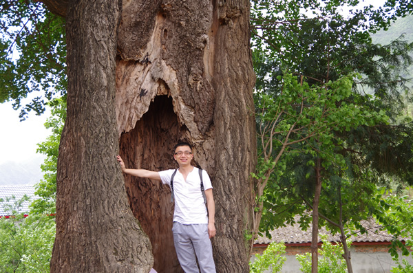

<杨雷

AppAnyway项目的发起者和领导者，主要负责项目主体框架设计、框架性能优化和编码指导工作。从2011年开始手机混合APP开发工作，首次提出手机APP本地化B/S模型并应用于10余个App开发中，于2014年底正式启动AppAnyway项目。现在西南科技大学计算机学院任教。
AppAnyway项目的发起者和领导者，主要负责项目主体框架设计、框架性能优化和编码指导工作。从2011年开始手机混合APP开发工作，首次提出手机APP本地化B/S模型并应用于10余个App开发中，于2014年底正式启动AppAnyway项目。现在西南科技大学计算机学院任教。